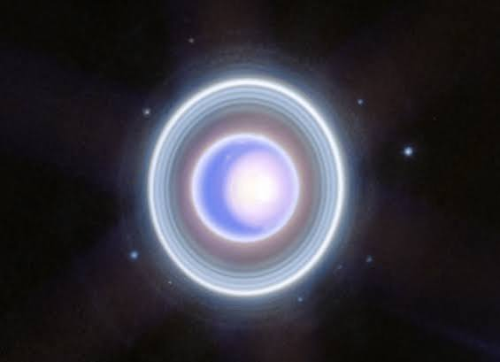
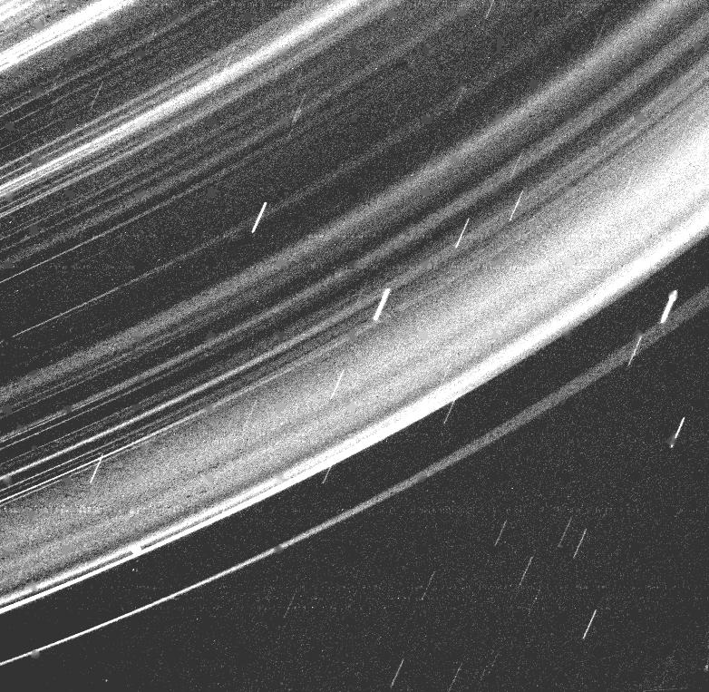

Uranus is the seventh planet from the Sun, and it has the third largest diameter of planets in our solar system. Uranus appears to spin sideways. Uranus is a very cold and windy world. The ice giant is surrounded by 13 faint rings and 28 small moons. Uranus rotates at a nearly 90-degree angle from the plane of its orbit. This unique tilt makes Uranus appear to spin sideways, orbiting the Sun like a rolling ball. Uranus was the first planet found with the aid of a telescope. It was discovered in 1781 by astronomer William Herschel, although he originally thought it was either a comet or a star. It was two years later that the object was universally accepted as a new planet, in part because of observations by astronomer Johann Elert Bode.


With an equatorial diameter of 31,763 miles (51,118 kilometers), Uranus is four times wider than Earth. If Earth was the size of a nickel, Uranus would be about as big as a softball. From an average distance of 1.8 billion miles (2.9 billion kilometers), Uranus is about 19 astronomical units away from the Sun. One astronomical unit (abbreviated as AU), is the distance from the Sun to Earth. From this distance, it takes sunlight 2 hours and 40 minutes to travel from the Sun to Uranus.
One day on Uranus takes about 17 hours. This is the amount of time it takes Uranus to rotate, or spin once around its axis. Uranus makes a complete orbit around the Sun (a year in Uranian time) in about 84 Earth years (30,687 Earth days). Uranus is the only planet whose equator is nearly at a right angle to its orbit, with a tilt of 97.77 degrees. This may be the result of a collision with an Earth-sized object long ago. This unique tilt causes Uranus to have the most extreme seasons in the solar system. For nearly a quarter of each Uranian year, the Sun shines directly over each pole, plunging the other half of the planet into a 21-year-long, dark winter. Uranus is also one of just two planets that rotate in the opposite direction than most of the planets. Venus is the other.
Uranus has two sets of rings. The inner system of nine rings consists mostly of narrow, dark grey rings. There are two outer rings: the innermost one is reddish like dusty rings elsewhere in the solar system, and the outer ring is blue like Saturn's E ring. In order of increasing distance from the planet, the rings are called Zeta, 6, 5, 4, Alpha, Beta, Eta, Gamma, Delta, Lambda, Epsilon, Nu, and Mu. Some of the larger rings are surrounded by belts of fine dust.
Uranus took shape when the rest of the solar system formed about 4.5 billion years ago – when gravity pulled swirling gas and dust in to become this ice giant. Like its neighbor Neptune, Uranus likely formed closer to the Sun and moved to the outer solar system about 4 billion years ago, where it is the seventh planet from the Sun.
Uranus is one of two ice giants in the outer solar system (the other is Neptune). Most (80% or more) of the planet's mass is made up of a hot dense fluid of "icy" materials – water, methane, and ammonia – above a small rocky core. Near the core, it heats up to 9,000 degrees Fahrenheit (4,982 degrees Celsius). Uranus is slightly larger in diameter than its neighbor Neptune, yet smaller in mass. It is the second least dense planet; Saturn is the least dense of all. Uranus gets its blue-green color from methane gas in the atmosphere. Sunlight passes through the atmosphere and is reflected back out by Uranus' cloud tops. Methane gas absorbs the red portion of the light, resulting in a blue-green color.
As an ice giant, Uranus doesn’t have a true surface. The planet is mostly swirling fluids. While a spacecraft would have nowhere to land on Uranus, it wouldn’t be able to fly through its atmosphere unscathed either. The extreme pressures and temperatures would destroy a metal spacecraft.
Uranus' atmosphere is mostly hydrogen and helium, with a small amount of methane and traces of water and ammonia. The methane gives Uranus its signature blue color. While Voyager 2 saw only a few discrete clouds, a Great Dark Spot, and a small dark spot during its flyby in 1986 – more recent observations reveal that Uranus exhibits dynamic clouds as it approaches equinox, including rapidly changing bright features. Uranus' planetary atmosphere, with a minimum temperature of 49K (-224.2 degrees Celsius) makes it even colder than Neptune in some places. Wind speeds can reach up to 560 miles per hour (900 kilometers per hour) on Uranus. Winds are retrograde at the equator, blowing in the reverse direction of the planet’s rotation. But closer to the poles, winds shift to a prograde direction, flowing with Uranus' rotation.
Uranus has an unusual, irregularly shaped magnetosphere. Magnetic fields are typically in alignment with a planet's rotation, but Uranus' magnetic field is tipped over: the magnetic axis is tilted nearly 60 degrees from the planet's axis of rotation, and is also offset from the center of the planet by one-third of the planet's radius. Uranus has auroras, but they are not in line with the poles like they are on Earth, Jupiter, and Saturn. This is due to the planet's lopsided magnetic field. The magnetosphere tail behind Uranus opposite the Sun extends into space for millions of miles. Its magnetic field lines are twisted by Uranus’ sideways rotation into a long corkscrew shape.
Select a phase of Uranus's orbit (97.77° tilt):
Credit: https://science.nasa.gov/uranus/facts/